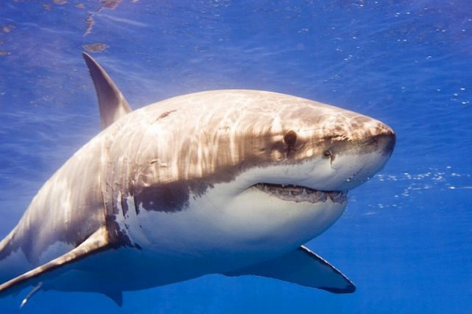

10 місце – китова акула. Не даремно люди так панічно бояться акул. Ці тварини ідеально пристосовані до підводного полювання. Від 12 метрового хижака з тисячами зубів пощади чекати марно. Однак серфінгісти можуть не бояться це 11-тонне чудовисько, яке запросто може проковтнути людину, але, як не дивно, надає перевагу набагато більш дрібній здобичі. Китова акула харчується, пропускаючи крізь себе воду, яку вона всмоктує своїми величезними щелепами. Щогодини через ситоподібні відростки зябер, вона відціджує планктон з мільйонів літрів води. Такої кількості води вистачило б, щоб наповнити басейн для олімпійських ігор. Китова акула займає 10 місце в нашій статті, тому що на відміну від інших видів, що харчуються планктоном, вона здатна заковтувати і більш великих риб. Але ця акула ніколи не стане ковтати такі великі предмети, наприклад, як дайвера. На жаль, не всі акули є такими добродушними, тому більшість людей намагаються уникати зустрічі з ними.
- 1 місце - Акула молот.
- 2 місце – Велика біла акула.
- 3 місце - Тигрова акула.
- 4 місце – Акула Мако.
- 5 місце – Рифова акула.
- 6 місце – Гренландська акула.
- 7 місце - Піщана тигрова акулоа.
- 8 місце - Шовкова акула.
- 9 місце - Тихоокеанський морський ангел.
- 10 місце – Китова акула.
Якщо вам вдалося вийти живим з моря, все одно не варто забувати про давніх хижаків, озброєних неймовірно витонченою мисливською технікою. Сьогодні, завдяки нашій статті ми познайомимось з десятком найбільш вражаючих акул нашої планети. Всі вони ідеальні вбивці, але деякі перевершили інших у полюванні за своєю здобиччю, і ви дізнаєтеся, хто з акул є найбільшим хижаком в морських просторах.
ви завжди можете перейти по посиланню Google і дізнатись багато інформаціі
9 місце. Наш наступний учасник ще більший, ніж китова акула, але він далеко не ангел. Ця акула мешкає в океанських водах біля узбережжя Каліфорнії, і називається тихоокеанський морський ангел. Вчені виявили, що він може лежати без руху кілька днів, очікуючи моменту, коли над його головою пропливе те, що можна з’їсти. Морський ангел займає 9 місце в нашій статті, так як для вилову здобичі це сімейство акул покладається не тільки на маскування і несподіваний напад, а на відмінний зір і вміння терпляче чекати.
8 місце. Глибини морів здаються нам урочисто мовчазними, але це далеко не так. Перші дослідники, що опускали підводний мікрофон були приголомшені цілою симфонією шумів, які видавали хвилі, що розбиваються об берег, і плаваючі риби. Понад 280 видів риб здатні вібрувати повітрям своїх бульбашок. Ці шуми служать їм для різних цілей, в тому числі для призову самок, а також для сигналу тривоги. Різкі рухи під водою створюють звукову хвилю. Здійснюючи їх, риба немов дзвонить в дзвоник, запрошуючи до обіду наступного учасника нашої статті – шовкову акулу. Всі акули володіють чудовим слухом, але згідно з проведеними експериментами найкраще чує саме шовкова акула. Вона може розпізнавати звуки плаваючої здобичі з відстані понад 400 метрів. Більш того, на відміну від людей, вона з точністю визначає, де знаходиться джерело звуку. Наші вуха влаштовані так, щоб чути звуки, які поширюються по повітрю, але під водою звук поширюється в 5 разів швидше, ніж на суші. На такій швидкості наші вуха не можуть визначити, де знаходиться джерело звуку, але шовкова акула прекрасно чує, незважаючи на те, що її вуха заховані усередині голови, хоча зовні вони виглядають як два крихітних отвори. Вчені виявили що шовкова акула особливо чутлива до звуків з частотою близько 40 герц, адже риба, що потрапила в біду, ссавці, які плавають у воді, видають звуки саме такої частоти.
7 місце. Навіть вночі занурення в морські глибини може бути небезпечним. Наступний учасник нашої статті бачить в 10 разів краще, ніж людина. Ця акула бачить краще, ніж леопард, а він – один з найвідоміших у світі нічних хижаків. Така акула може застати вас зненацька. У мілкозубої піщаної акули, яку називають піщаною тигровою акулою небезпечні гострі зуби. Власники акваріумів охоче купують цю акулу в свої колекції, так як вона виглядає дуже злісною. У дикій природі піщана акула весь день відпочиває в печерах. Проте вночі, коли в небі світять тільки зірки і місяць, вона виходить на полювання. Очі акули, так само як і очі людини покриті чутливою плівкою – сітківкою. Мільйони клітин рецепторів вловлюють форму її здобичі. За сітківкою у цієї акули розташовується тонкий шар крихітних «дзеркал», які відбивають світло на світлочутливі клітини. У деяких ссавців очі влаштовані так само, але навіть в очах леопарда, відбите зображення виглядає змазаним. Піщана акула потрапила на 7 сходинку нашої статті, тому що дзеркала відображають на сітківку до 90 кольорів, створюючи більш різке зображення. Завдяки цьому піщана акула може полювати в повній темряві і є найбільш небезпечним нічним хижаком.

6 місце – Гренландська акула. Моря заполярного кола не найтепліше місце для купання. Температура води тут не перевищує 2-х градусів за Цельсієм. В такій воді без гідрокостюма людина замерзне менш ніж за 5 хвилин. Але в цих водах живуть акули, які не бояться холоду і цілком успішно виживають в таких екстремальних умовах. У довжину гренландська акула перевищує 6 метрів. Вона плаває так повільно, що її прозвали сонною акулою. Але зовнішній вигляд може бути оманливим. Ця акула здатна зловити таку моторну рибу як кита, що ще більш дивно. Деякі з цих акул майже сліпі через паразитів, що пожирають їхні очі. Цей невеликий відросток, що бовтається на очному яблуці акули, є ракоподібним, який живиться рогівкою її очей. На щастя для акули її зір грає не настільки важливу роль, як для багатьох інших тварин. Гренландська акула потрапила на 6 місце нашої статті, так як цей хижак без зусиль ловить здобич навіть у темряві, завдяки своєму загостреного нюху, який допомагає їй вловлювати запах здобичі, що поширюється по воді.
5 місце – Рифова акула. Наступний учасник нашої статті видатних акул ще страшніший, ніж аварійна посадка у відкритому морі. Спочатку вам потрібно буде вибратися з кабіни, але це не остання проблема з якою ви зіткнетеся після падіння у воду, адже незабаром до вас припливе океанська рифова акула. Ця акула займає 5 місце завдяки тому, що вона відчуває запах здобичі не тільки у воді, але і в повітрі. Всі акули відчувають запах крові, розчиненої у воді. Але деякі летючі речовини, наприклад гази з розкладених тіл загиблих китів поширюються повітрям набагато швидше, ніж по воді. Один російський біолог припустив, що саме з цієї причини рифові акули іноді висувають голову з води. Тримаючи ніс на поверхні, акула вловлює запахи, що поширюються повітрям, і дізнається про віддалене джерелі їжі швидше, ніж багато потенційних її конкурентів. Рифові акули використовують особливості свого нюху, щоб першими опинитися на місці катастрофи у відкритому морі. Команда американського крейсера «Індіанополіс», яка брала участь у військових діях під час Другої Світової війни, переконалася в цьому на власному досвіді. Крейсер доставив бомбу, яку повинні були скинути на Хіросіму і повертався додому. Але в цей момент він натрапив на японський підводний човен, який тут же почав атакувати крейсер. З потопаючого корабля врятувалось 900 осіб, і всього через півгодини з’явилася перша рифова акула. Допомога йшла дуже довго, адже крейсер «Індіанополіс» перебував на надсекретній місії, тому ніхто не знав, що він знаходився у цей момент у відкритому морі. Протягом 5-ти жахливих днів акули нападали на людей, убивши більше половини моряків, вимушених триматися на воді.

4 місце – Акула Мако. Ми познайомилися з акулами, що володіють надчутливими органами чуттів. Але який сенс у тому, що ти знайшов здобич, якщо не можеш її наздогнати. Перед нашим наступним учасником така проблема не стоїть. Акула Мако, або сіро-блакитна акула – найшвидша серед усіх. По швидкості і спритності їй немає рівних. Вона потрапила на 4-е місце нашої статті, тому що може плавати зі швидкістю до 50 кілометрів на годину. Ми з вами не можемо бігти так швидко по суші. Потужний хвіст дає акулі необхідний поштовх, а форма тіла зводить тертя з водою до мінімуму. Вчені виявили, що у шкірі цієї акули криється ще один секрет настільки неймовірної швидкості. Її шкіра зовсім не гладка, а покрита сотнями крихітних рифлених лусочок, завдяки яким вода утримується біля шкіри акули і тече у вигляді безлічі спрямованих потоків. Іншими словами, коли акула пливе, зустрічний потік треться тільки об шар води розташований у лусці, і оскільки тертя води об воду набагато слабкіше, ніж тертя води об шкіру, акули рухаються швидше. Тому цій акулі потрібно в 6 разів менше зусиль для руху під водою, ніж навіть гладкому корпусу субмарини.
3 місце. Третє місце нашої статті займає тигрова акула. Мозок цього вбивці досить великий як для представників класу хрящових риб. Він розвинений на стільки, що його можна порівняти з мозком багатьох птахів і ссавців. У тигрових акул є і розум і сила. Вони виростають до 5 метрів у довжину і готові заковтувати все, що трапляється на їх шляху. Щелепи тигрової акули – це грізна зброя, з допомогою якої акула може проламати навіть міцний панцир морської черепахи, при цьому її зуби дують як циркулярна пила. На кожному зубі є щербини, як на ножі для різання м’яса. Такі зуби дуже гострі, причому на стільки, що вони можуть вирвати шматок з чого завгодно, навіть з металевої пластини. Завдяки таким зубам, що нагадують консервний ніж раціон тигрових акул відрізняється великою різноманітністю. Цих акул іноді називають сміттярами океану, тому що в їх шлунках знаходили: таблички з номерами машин, консервні банки, поплавки та буйки, кокоси, шматки кам’яного вугілля, і навіть не розкриті банки рибних консервів. Тигрова акула знайшла спосіб позбавлятися від неперетравлених відходів, вона буквально вивертає свій шлунок навиворіт і виштовхує все сміття назовні, тому тигрова акула сміливо кусає і заковтує все, що трапляється на її шляху.

2 місце – велика біла акула. Життя колонії морських котиків не таке просте, як здається на перший погляд. Тварини весь час відчувають, що за ними постійно спостерігають кілька пар голодних очей – трьохтонного чудовиська, озброєного трьома сотнями зубів. Ця акула розумна, довжина її мозку становить більше 40 сантиметрів. Вона навчається в 80 разів швидше, ніж кішка. Це найзнаменитіша акула в світі, і сама велика хижа риба у морі – велика біла акула. Вона потрапила на другу сходинку нашої статті завдяки своїм великим чорним очам. Потужна сітківка її очей дозволяє акулі бачити предмети в кольорі, причому краще, ніж інші її родичі. Плаваюча на глибині, вона здатна побачити грейпфрут, який розташований на поверхні моря з відстані понад 18 метрів. Крім того, це єдина акула в світі, яка висовує голову з води, щоб подивитись, що відбувається за межами поля зору. Біла акула захищає свої очі, адже вони відіграють в її житті велику роль. На відміну від інших, біла акула не вміє моргати, тому вона закочує очі за орбіти, щоб ніхто не заподіяв їм шкоди. Але навіть із закритими очима, акула зовсім не сліпа, завдяки своєму шостому відчуттю. Всі акула здатні розрізняти невеликі електричні поля, які виникають біля живих істот, при скороченні м’язів. Ось чому велика біла акула може зловити здобич, навіть коли її очі заховані, адже вона може відчувати здобич за допомогою зубів. Один укус говорить їй про те, чи підходить для неї та чи інша їжа. До кожного зуба підходять чутливі нервові закінчення, які в поєднанні з рухливими щелепами, дозволяють акулі маніпулювати об’єктами і досліджувати їх прямо у себе в пащі. Біла акула займає друге місце, завдяки поєднанню могутності і високотехнологічної системи сенсорів, які і принесли їй репутацію найнебезпечнішої акули в світі.

1 місце. На рифі настає ніч, і деякі риби ховаються, зариваючись у пісок. Цей прийом допомагає вберегтись від будь-якого хижака, крім переможниці нашого рейтингу – акули-молота. Вона займає перше місце, тому що на її голові розташована найбільш чутлива система сенсорів, даючи акулі панорамний огляд. Великі ніздрі, і той факт, що при русі вона водить головою з боку в бік, говорять про те, що під час пошуку їжі молот оглядає набагато більший простір, ніж інші види акул. Ця акула більш чутлива до електричних розрядів, тому що на її голові містяться більше електричних рецепторів. Таким чином, вона може шукати навіть таку здобич, яка сховалася в піску. Акула-молот досліджує морське дно, намагаючись знайти електричні сигнали, які виникають при серцебитті схованих риб. Акула відчуває половину однієї мільярдної частки вольта. Це все одно, що відрізняти електричний розряд батареї кишенькового ліхтарика з відстані 1600 кілометрів. Однак найбільш дивовижна особливість акул-молотів – її сьоме відчуття. Деякі вчені вважають, що ці акули використовують електричні рецептори ще й для того, щоб спостерігати за невидимою електричною системою дна, утвореною магнетизмом рельєфу. У акули-молота стільки екстраординарних органів відчуттів, що ми навіть уявити собі не можемо, як вона бачить світ. Саме тому, ми визнаємо цю дивну морську істоту найвидатнішою акулою морів.

Якщо матеріал вам сподобався, розкажіть про нього друзям. Дякуємо!